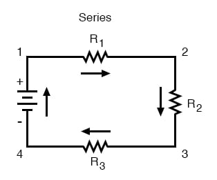
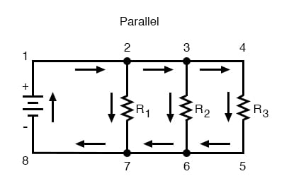
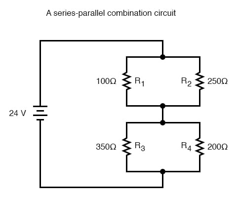
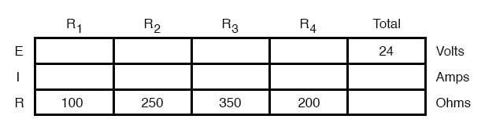

With simple series circuits, all components are connected end-to-end to form only one path for the current to flow through the circuit:

With simple parallel circuits, all components are connected between the same two sets of electrically common points, creating multiple paths for the current to flow from one end of the battery to the other:

With each of these two basic circuit configurations, we have specific sets of rules describing voltage, current, and resistance relationships.
Series Circuits:
Parallel Circuits:
However, if circuit components are series-connected in some parts and parallel in others, we won’t be able to apply a single set of rules to every part of that circuit. Instead, we will have to identify which parts of that circuit are series and which parts are parallel, then selectively apply series and parallel rules as necessary to determine what is happening. Take the following circuit, for instance:


This circuit is neither simple series nor simple parallel. Rather, it contains elements of both. The current exits the bottom of the battery splits up to travel through R3 and R4, rejoins, then splits up again to travel through R1 and R2, then rejoin again to return to the top of the battery. There exists more than one path for current to travel (not series), yet there are more than two sets of electrically common points in the circuit (not parallel).
Because the circuit is a combination of both series and parallel, we cannot apply the rules for voltage, current, and resistance “across the table” to begin analysis like we could when the circuits were one way or the other. For instance, if the above circuit were simple series, we could just add up R1 through R4 to arrive at a total resistance, solve for total current, and then solve for all voltage drops. Likewise, if the above circuit were simple parallel, we could just solve for branch currents, add up branch currents to figure the total current, and then calculate total resistance from total voltage and total current. However, this circuit’s solution will be more complex.
The table will still help us manage the different values for series-parallel combination circuits, but we’ll have to be careful how and where we apply the different rules for series and parallel. Ohm’s Law, of course, still works just the same for determining values within a vertical column in the table.
If we are able to identify which parts of the circuit are series and which parts are parallel, we can analyze it in stages, approaching each part one at a time, using the appropriate rules to determine the relationships of voltage, current, and resistance. The rest of this chapter will be devoted to showing you techniques for doing this.
REVIEW: